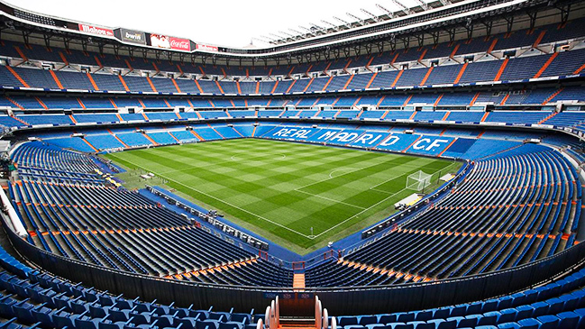

El Real Madrid C.F. es el club más exitoso de la historia del fútbol . Es el único con las cifras récord de 13 Copas de Europa y 33 Ligas.
El Real Madrid Club de Fútbol, más conocido simplemente como Real Madrid, es una entidad polideportiva con sede en Madrid, España. Fue declarada oficialmente registrada como club de fútbol por sus socios el 6 de marzo de 1902 con el objeto de la práctica y desarrollo de este deporte —si bien sus orígenes datan al año 1900,9 y su denominación de (Sociedad) Madrid Foot-ball Club a noviembre de 1901— siendo el quinto club fundado en la capital.n. 3 Tuvo a Julián Palacios y los hermanos Juan Padrós y Carlos Padrós como principales valedores de su creación.
Identificado por su color blanco del que recibe el apelativo de blancos o merengues, es uno de los cuatro clubes profesionales de fútbol del país cuya entidad jurídica no es la de sociedad anónima deportiva, ya que su propiedad recae en sus más de 100 000 socios. Otra salvedad comparte con el Athletic Club y el Fútbol Club Barcelona al participar sin interrupción en la máxima categoría de la Liga Nacional de Fútbol Profesional, la Primera División de España, desde su establecimiento en 1929.12 En ella posee los honores de haber sido el primer líder histórico de la competición, es el club con más títulos, y el de la máxima puntuación en una sola edición
ESTADIO DEL REAL MADRID

El estadio del Real Madrid fue inaugurado el 14 de diciembre de 1947. Anteriormente el Real Madrid jugaba en el Viejo Chamartín. A través de los años el estadio Santiago Bernabéu ha pasado por varias restauraciones que han dado como resultado que hoy luzca muy moderno.
Las remodelaciones se llevaron a cabo en 1954, 1982, 1993 y 2003. La última renovación realizada fue poner una nueva cubierta en la parte llamada Padre Damián.
TEl primer partido que se jugó allí fue entre el Real Madrid y OS Belenenses (el club portugués), el 14 de diciembre de 1947.
Santiago Bernabéu fue el hombre que tuvo la visión de crear el estadio, y es por eso que lleva su nombre, ya que al momento de su construcción el estadio del Real Madrid era el mejor de todos.